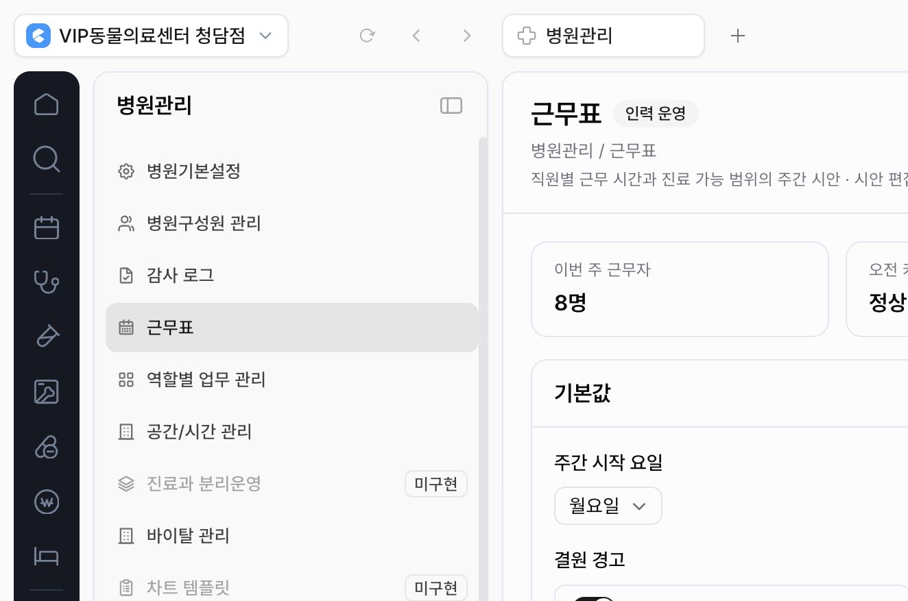

P0
핵심 행동이 없다
조회·추가·수정·삭제·게시가 구분되지 않고, `시안 저장`만 존재한다.
현재 화면의 정적인 표를 Flex의 구성원 중심 캘린더 경험으로 재구성했다. To‑Be는 주간 매트릭스에서 편성하고 → 일간 타임라인에서 커버리지를 확인하고 → 직원 개인 캘린더에서 요청을 관리하는 하이브리드 근무표다.

조회·추가·수정·삭제·게시가 구분되지 않고, `시안 저장`만 존재한다.
직원 이름이 단순 텍스트라 근무 가능 시간, 휴무, 요청을 확인할 수 없다.
미배정 슬롯 2개를 표시하지만 해당 슬롯을 찾거나 채우는 방법이 없다.
| 우선순위 | 현재 문제 | 사용자 영향 | 개선 방향 |
|---|---|---|---|
| P0 | 근무표 표가 읽기 전용으로 보이고 셀 클릭, 추가 버튼, 행 메뉴가 없다. | 관리자가 이 화면에서 실제 편집이 가능한지조차 판단하기 어렵다. | 빈 셀과 근무 카드 모두 조작 대상으로 만들고, 상단에 `근무 추가`를 고정한다. |
| P0 | `시안 저장`이 근무 한 건 저장, 전체 초안 저장, 직원 공개 중 무엇인지 불명확하다. | 변경이 직원에게 즉시 보이는지 알 수 없어 운영 실수가 생긴다. | 근무 편집의 `저장`과 주간 근무표의 `게시`를 분리한다. 게시 상태와 시각을 헤더에 표시한다. |
| P0 | 직원별 상세 정보와 개인 일정 관리가 없다. | 근무 가능 시간·정기 휴무·휴가 요청을 다른 화면이나 기억에 의존하게 된다. | 직원명을 클릭하면 상세 패널을 열고 개인 일정, 가능 시간, 요청, 주간 합계를 함께 보여준다. |
| P1 | 미배정·인력 부족·충돌이 요약 카드에만 존재한다. | 문제를 발견해도 어느 날짜·직군을 수정해야 하는지 연결되지 않는다. | 그리드 위에 문제 스트립을 두고 클릭 시 해당 셀과 근무를 강조한다. |
| P1 | 월–금만 보여 주고 주간 탐색, 오늘 이동, 역할 필터가 없다. | 주말·야간·응급 운영과 이전/다음 주 검토가 불가능해 보인다. | 7일 주간 그리드, 주 이동, 오늘, 직군·상태 필터, 개인 검색을 제공한다. |
| P1 | 주간 시작·잠금·경고 같은 정책 설정이 편성 화면의 중심을 차지한다. | 가끔 바꾸는 설정이 매주 반복하는 편성 업무보다 먼저 보인다. | 설정은 `근무표 설정` 다이얼로그로 이동하고 기본 화면은 편성에 집중한다. |
| P2 | 휴무, 교육, 대체 근무, 미배정 근무가 동일한 텍스트 셀로 표현된다. | 근무 유형과 예외 상황을 빠르게 구분하기 어렵다. | 절제된 색·테두리·텍스트 라벨을 함께 사용하고 색만으로 의미를 전달하지 않는다. |


Flex는 직원 사진·이름·직무·총 근무시간을 일정과 같은 행에 둔다. CLAiR도 직원 행을 단순 라벨이 아니라 개인 일정과 요청으로 들어가는 진입점으로 사용한다.
교대근무는 월간 매트릭스로 패턴을 보고, 구성원 근무는 시간축으로 실제 근무 범위를 본다. CLAiR은 주간 매트릭스와 일간 타임라인을 전환해 편성과 커버리지 검토를 분리한다.
민트·노랑·파랑·라일락을 넓은 흰 캔버스와 얇은 그리드 위에 사용한다. 상태를 빠르게 찾되 화면이 경고판처럼 보이지 않는다.
Flex는 근무·외근·휴가를 시간 블록으로 배치한다. 직원용 `내 근무`도 목록보다 주간 시간 캘린더를 우선해 변경 전후를 공간적으로 이해하게 한다.
근무 유형·휴가·승인 정책은 설정하고, 일상 화면은 입력·조회·요청에 집중한다. CLAiR의 주간 시작·잠금·경고도 별도 설정으로 이동한다.
Flex에는 없는 진료실·직군 커버리지·야간/응급 배정을 CLAiR이 추가한다. Flex를 복제하는 것이 아니라 병원 운영 의사결정에 맞게 확장하는 부분이다.
관리자 화면 안에서 `주간 편성`과 `일간 커버리지`를 전환할 수 있고, 상단 탭에서 직원용 개인 캘린더로 이동할 수 있어. `근무 추가`, 근무 블록, 직원 이름을 누르면 우측 편집 패널이 열린다.
직원 근무를 편성하고 게시해.
7월 7일 – 7월 13일 · 근무 블록을 눌러 상세 확인
관리자가 편성할 때 충돌을 확인해.
휴무와 근무 변경 상태를 확인해.
`템플릿 적용`과 `첫 근무 추가`를 제공한다. 정책 설정으로 보내지 않는다.
최근 근무표를 유지하고 재시도한다. 비관리자는 편집 행동을 숨기고 읽기 전용 이유를 표시한다.
키보드로 셀 선택·추가·편집이 가능해야 한다. 색뿐 아니라 시간·상태 텍스트를 함께 쓴다.
행·열 크기를 유지하는 스켈레톤을 사용해 직원과 날짜 위치가 움직이지 않게 한다.
변경된 근무 수와 대상 직원을 보여주고, 재게시할 때 변경 메모를 받는다.
관리자는 날짜별 목록으로 전환하고, 직원은 세로형 개인 주간 목록을 기본으로 쓴다.
병원관리 탐색과 테이블·행동 패턴을 유지해 다른 모듈과 학습 비용을 맞춘다.
EmrModuleListSidePanelEmrRowActionMenuEmrEmptyStateEmrConfirmDialogContentEmrTable primitives새로운 독자 UI 프레임워크 없이 이미 사용 중인 기본 컴포넌트로 구현 가능하다.
ButtonBadgeSheetDialogPopoverSelectInputTabsToggleGroupScrollAreaTooltipSwitchTextareasrc/features/hospital-admin/module.tsx의 hospitalAdminConceptScreens.schedule 및 HospitalAdminConceptScreen.docs/product/features/hospital-admin/hospital-admin-settings-hub-plan.md, docs/work/hospital-admin/HOSPITAL-ADMIN-PR-002-settings-hub-screen-concepts.md.